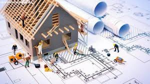
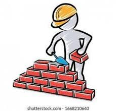
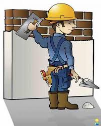

Munkáink




Építkezés felsőfokon – profi kivitelezés, korrekt árakon
AjánlatkérésA Profix Group Kft. megbízható építőipari vállalkozás, amely főként lakásfelújítással és belső átalakításokkal foglalkozik Budapesten és környékén.
Teljes körű kivitelezést vállalunk a tervezéstől a kulcsrakész átadásig, pontos határidőkkel és átlátható árazással.
Budapesten és környékén vállalunk felújítási munkákat.
Telefon: +36 30 123 4567
E-mail: info@profixgroup.hu